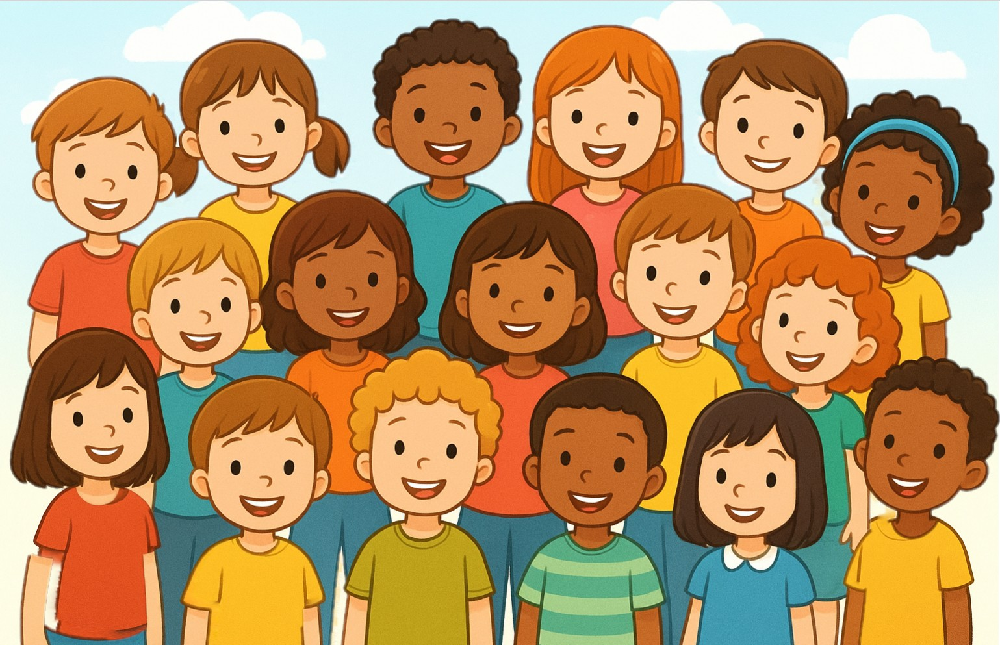

物質的な安定を求める一方で、深い感情や変容を経験することで、内面の成長へと導かれる。
作成日時: 2025-11-29 00:00
更新日時: 2025-11-29 00:16
While seeking material stability, one is guided towards inner growth through the experience of deep emotions and transformation.
Tout en recherchant une stabilité matérielle, on est conduit à une croissance intérieure en expérimentant des émotions profondes et des transformations.
Mientras se busca la estabilidad material, se es guiado hacia el crecimiento interior a través de la experiencia de emociones profundas y transformaciones.
Enquanto busca a estabilidade material, é guiado para o crescimento interior ao experimentar emoções profundas e transformações.